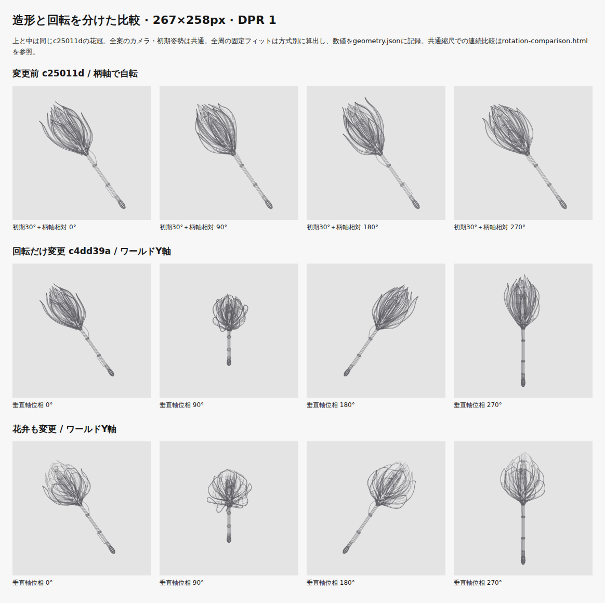
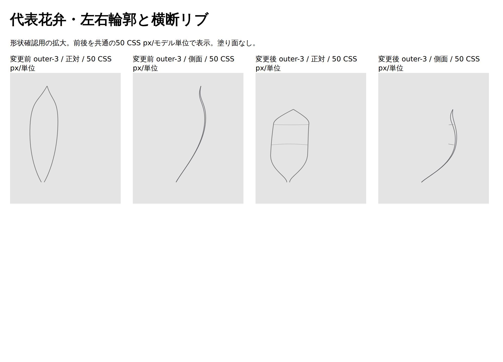
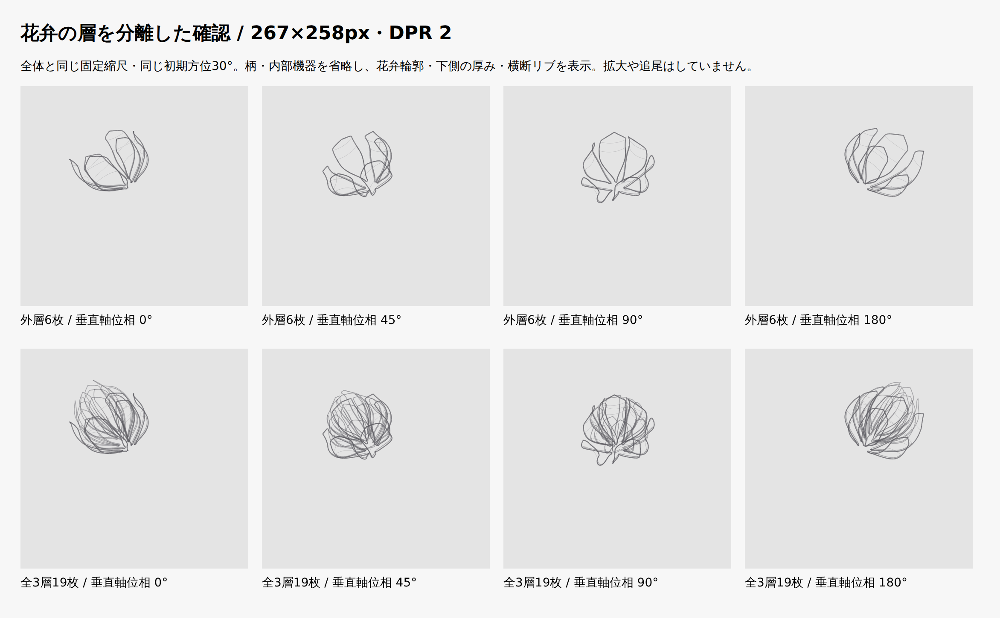
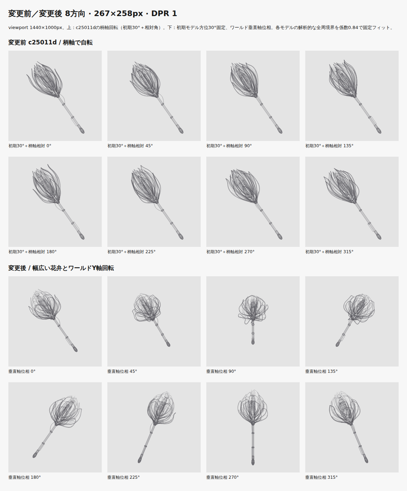

PR #170の機械蓮を、幅広い腹・浅いカップ断面・短い尖端が読める19枚の花弁へ変更しました。運動は、初期姿勢として傾けた杖全体を原点のワールドY軸で回す方式へ変更。回転と造形を別コミットに分けています。
c25011dc444b91549dd1baed565243c3512044e1（今回より前の機械蓮）。旧ラックや二枚外殻は比較元にしていません。
c4dd39a8debfdfd844bf5a3c81687024540b7dcf77da554290f76bff0d45613437ddc668c1a29bae
http://127.0.0.1:4324/portfolio/。マージ・公開は行っていません。
連続比較HTMLを開く。GitHubからはRawを保存してローカルのブラウザーで開いてください。このHTMLは単体で動作し、サーバーや外部アセットは不要です。
左：変更前の柄軸回転、中：同じ花冠のワールドY回転、右：花弁も変更した最終案。カメラ、初期モデル方位30°、初期の見かけの左傾斜35°は共通。位相は0°から16秒で一周します。標準では3案の解析的な全周境界の和集合から共通の固定縮尺・中心を算出。通常のモデル別固定フィットにも切り替えられます。濃淡は各方式の全周深度範囲を使用しています。本番Homeへの比較UI追加はありません。
16秒間の位相採取・実行エラーなしの記録。表示を0°から約45°刻みで採取し、一周後に戻ることを確認しました。実Canvasの16秒一周はブラウザーテストでも検証しています。

外層6枚は低く外へ開き、中層8枚は椀状、内層5枚は既存の花芯が覗く高さへ短縮しました。広い肩を保って最後の20〜24%で絞り、カップ形状を強めています。左右輪郭を残し、下半分の裏輪郭・短い補強と、外層2本／中層1本の湾曲横リブへ描線を整理。全長に続く裏線と強い中央稜線を減らしました。線の濃さ・太さの数値は従来どおりです。
花弁の中心線長／最大幅：外層2.06〜2.43、中層2.84〜3.28、内層3.18〜3.53。内冠を短くしたため全長は10→9.72。最高点は変更していない花芯ピンのy=4.72です。柄を短くしたり、全体を拡大したりしていません。
代表花弁の正面・側面（同倍率の拡大） / 外層6枚と全3層19枚（Homeと同じ縮尺）


各画像の上段は変更前c25011d、下段は変更後。旧画像は「初期30°＋柄軸相対角度」、新画像は「モデル方位30°固定・ワールド垂直軸位相」と区別しています。通常表示は方式ごとに同じ係数0.84で全周固定フィットし、角度別の再フィットはしません。

| モデル | 全長 | 頭部長 | 全周最大径 | 267×258固定縮尺 | 初期花冠幅・軸直交方向 |
|---|---|---|---|---|---|
| 変更前 c25011d | 10 | 4.5 | 3.383 | 25.461 px/単位 | 79.537 px |
| 同じ形状・回転だけ変更 | 10 | 4.5 | 3.383 | 21.978 px/単位 | 68.656 px |
| 花弁も変更 | 9.72 | 4.222 | 3.884 | 22.716 px/単位 | 83.757 px |
新しい回転だけでは全周範囲が広がり、縮尺が約14%小さくなります。最終形状では外層の広がりを増やしたため、初期花冠幅は79.54→83.76pxになりました。線分数の増加を成果にせず、実寸で花弁の広い腹・層の段差・機械の芯を確認しています。
比較描画と実preview Canvasの照合：前後×4描画枠×2 DPR×8方向の128条件すべてPNGバイト一致。拡大画像だけで完成判定していません。
投影前に初期モデル方位と傾斜を一度だけ適用し、その共有頂点をワールドYで回します。基準点は固定の[0,0,0]。全周のXY境界と深度範囲を新しい変換から再計算しています。全周で左35°を維持する旧期待値は置換しました。
| 垂直軸位相 | 柄の上端−下端 dx | dy | 見かけの左傾斜 |
|---|---|---|---|
| 0° | -12.486 | -17.832 | 35° |
| 90° | 0 | -13.562 | 0° |
| 180° | 12.486 | -17.832 | -35° |
| 270° | 0 | -22.103 | 0° |
| 360° | -12.486 | -17.832 | 35° |
初期姿勢の旧方式との差は正規化座標で最大6.661338147750939e-16、ワールドYの誤差0、回転半径の最大誤差4.440892098500626e-16。10寸法×360角度で最小余白18.952 CSS px。128分割参照との最大曲線誤差0.078 CSS px（目安0.25以内）。全数値・設定・ソースSHA256
| viewport | 実描画枠 | Home全体 |
|---|---|---|
| 1440×1000px | 267×258px | 変更前 / 変更後 DPR 1 / 変更後 DPR 2 |
| 1024×1000px | 223×258px | 変更前 / 変更後 DPR 1 / 変更後 DPR 2 |
| 980×1000px | 914×238px | 変更前 / 変更後 DPR 1 / 変更後 DPR 2 |
| 768×1000px | 726×238px | 変更前 / 変更後 DPR 1 / 変更後 DPR 2 |
| 390×1000px | 348×238px | 変更前 / 変更後 DPR 1 / 変更後 DPR 2 |
| 320×1000px | 278×238px | 変更前 / 変更後 DPR 1 / 変更後 DPR 2 |
前後12条件で枠の座標・寸法が一致しました。首元・柄・石突き・冷却部・配線は線分の座標と線種のハッシュも一致しています。ヘッダー、フッター、Aboutとの配置・表示順・高さ、他ページ、サムネイル、検索、依存、CI、配信設定は変更していません。
6.18.54.1-microsoft-standard-WSL2 / AMD Ryzen 5 3600 6-Core Processor / Chromium 156.0.8078.4 / Node v26.12.1。各条件60実描画のウォームアップ後、480実描画を採取。clearRect開始から最後のstrokeまでのCPU時間で、計測処理の負荷を含みます。省略rAFは含めず、ブラウザー合成・GPU時間とは区別しています。
| 条件 | 中央値 前→後 | p95 前→後 |
|---|---|---|
| 267×258px / DPR 1 | 1.8 → 1.2 ms | 2.4 → 1.8 ms |
| 348×238px / DPR 2 | 2.1 → 1.3 ms | 2.7 → 1.8 ms |
測定環境ではp95 8msの目安以内。全端末の保証ではありません。線分6,464→4,784、共有頂点5,562→4,110。19枚を維持し、重なる長手方向の描線を整理したため配信量も減っています。
| 項目 | 変更前 | 変更後 |
|---|---|---|
| Home HTML raw | 1,173,999 B | 871,469 B |
| Home HTML gzip | 105,573 B | 77,745 B |
| 静止SVG raw | 1,163,765 B | 861,235 B |
| 静止SVG gzip | 100,979 B | 73,177 B |
変更前・全サンプル / 変更後・全サンプル / 変更前の枠 / 変更後の枠
npm run check：passed: 97 files; 0 errors, warnings or hints
npm run lint：passednpm run test -- --run：passed: 53 files, 334 tests, 45.07
seconds
npm run build：passed: Astro and PagefindPLAYWRIGHT_EXTERNAL_WEB_SERVER=1 npm run test:visual --
--workers=2：passed: 92 Chromium desktop/mobile tests, 1.2 minutes
git diff --check：passed操作、Astro往復の位相と停止保持、reduced-motion、画面外・非表示時停止、rAF/Observer/イベント解除、SVGフォールバック、検索併用、レイアウトの回帰を確認。独立ボタンや可視ラベルを追加していません。
Firefox／Safari、実機タッチ、実OSのタブ切替、Windowsでの起動は未検証です。タッチはChromiumエミュレーション、非表示通知は合成イベントと単体テストで確認しました。